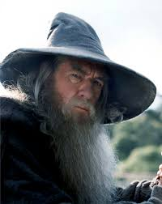

Gandalf

Wizard, Strategist, and Protector of Middle-earth
Middle-earth | mailto:gandalf@wizardmail.me | +555-123-4567 | www.gandalfwise.com
Summary
A wise and powerful wizard with centuries of experience guiding leaders, protecting realms, and combating evil forces. Known for inspiring courage, fostering unity, and wielding exceptional magical abilities to maintain the balance of good in Middle-earth. Proven expertise in strategic foresight, conflict resolution, and fostering alliances.
Education
School of Istari
Valinor, Undying Lands
- Field of Study: Magic, Wisdom, and the Secrets of the Universe
- Graduation Year: Immortal timeline
Work Experience
Advisor and Guardian
Various Realms of Middle-earth | Year 1000 - Present
- Guided the Fellowship of the Ring in their mission to destroy the One Ring, providing leadership and magical support.
- Played a pivotal role in the defeat of Sauron during the War of the Ring through strategic planning and alliances.
- Mentored key figures, including Aragorn, Frodo, and Bilbo Baggins, to prepare them for their destined roles.
- Acted as a mediator between warring factions, including humans, elves, and dwarves, fostering alliances for the greater good.
Defender of Middle-earth
Order of the Istari | Year 1000 - Present
- Battled and defeated the Balrog of Morgoth, reclaiming life and returning stronger as Gandalf the White.
- Conducted reconnaissance on dark powers, including Dol Guldur and Sauron’s resurgence, sharing intelligence with the White Council.
- Aided in the destruction of Smaug and the liberation of Erebor alongside Thorin Oakenshield and his company.
Skills
- Mastery of Magical Arts (Light Manipulation, Illusions, Defensive Spells)
- Strategic Leadership and Diplomacy
- Exceptional Oratory and Motivational Skills
- Deep Knowledge of Lore, History, and Languages of Middle-earth
- Combat Expertise (Swordsmanship, Staff Combat)
- Team Building and Mentorship
Awards and Certifications
- Bearer of Narya (Ring of Fire): For unparalleled courage and inspiration.
- Reincarnated as Gandalf the White: Recognition for completing a heroic transformation and defeating a Balrog.
- Order of the Valar: Certification of divine appointment as an Istari.
- Champion of Middle-earth: Awarded for the decisive role in the War of the Ring.
Other
- Authored numerous volumes on the histories and secrets of Middle-earth.
- Known for memorable quotes, including, “A wizard is never late, nor is he early; he arrives precisely when he means to.”
- Frequently travels with Shadowfax, the Lord of all horses.
- Hosts regular storytelling sessions in the Shire.